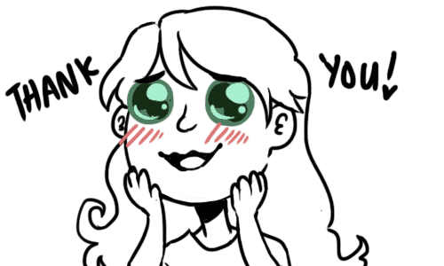

Seit kurzem haben wir den JAA Slack Channel geschlossen. Obwohl es uns sehr gefreut hat den Kanal/Channel zu leiten, werden wir unsere Zeit nutzen, um uns auf andere Ziele zu fokussieren.
Falls euch der Channel fehlt, gibt es andere nette Communities im Techbereich, denen ihr als Junior/Anfänger beitreten könnt:
Vielen lieben Dank an alle unsere UnterstützerInnen und TeilnehmerInnen. Juniors Are Awesome hat es sich zum Ziel gesetzt, ein sicherer und vertrauenswürdiger Raum zu sein... Euer Geschichten und liebevolle Mühe hat dieses Ziel erreicht, und darauf sind wir sehr stolz.
